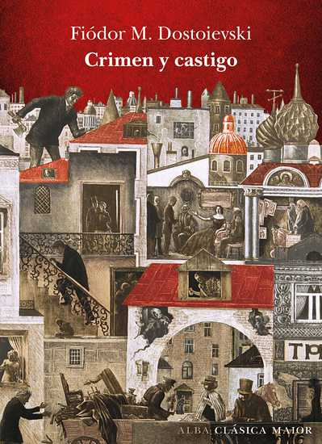

Fiódor Dostoyevski · 1866 · Primera gran novela
Crimen y Castigo
Un estudiante de derecho pobre y brillante de San Petersburgo convence que los hombres extraordinarios tienen el derecho —y quizás la obligación— de transgredir la ley moral ordinaria en nombre de un bien mayor. Decide probarse a sí mismo matando a una usurera inútil. Lo que ocurre después no es la persecución policial sino algo más perturbador: el desmoronamiento de su propia mente.
La primera gran novela de Dostoyevski establece de golpe todos los temas que lo ocuparán el resto de su vida: la culpa como mecanismo psicológico antes que como concepto moral, la redención a través del sufrimiento, la diferencia entre las ideas y sus consecuencias humanas. Es también la novela más cinematográfica que escribió — no por casualidad fue la primera en adaptarse al cine y nunca dejó de adaptarse.
Rodión Raskolnikov
Ex estudiante de derecho que vive en un cuartucho de San Petersburgo, sin dinero y con una teoría filosófica que justifica el crimen de los «hombres extraordinarios». Mata. Y luego descubre que la teoría y la realidad de haber matado son dos cosas completamente distintas.
Sofía Marmeladova «Sonya»
Hija del funcionario alcohólico Marmeladov, se prostituye para mantener a su familia. Creyente profunda y sin ostentación. Es el único personaje de la novela que no juzga a Raskolnikov después de confesarle el crimen — y el único que tiene la fuerza moral para acompañarlo al confesar.
Porfiry Petrovich
Juez de instrucción encargado del caso. No necesita pruebas — sabe desde el principio que Raskolnikov es el asesino, y Raskolnikov sabe que él lo sabe. Sus conversaciones son las más tensas y las más intelectualmente ricas de la novela: dos mentes brillantes en un juego de ajedrez donde las reglas son psicológicas, no legales.
Arkady Svidrigailov
Terrateniente que ha cruzado todas las líneas morales que Raskolnikov solo ha cruzado en teoría. No tiene culpa, no tiene angustia, no tiene el mecanismo de autodestrucción de Raskolnikov. Lo que tiene es el vacío absoluto que espera al otro lado de la transgresión. Su destino es la respuesta de Dostoyevski a la pregunta de qué ocurre si la teoría funciona.
Avdotia Raskolnikova «Dunya»
Hermana de Raskolnikov, más fuerte y más práctica que él. Está dispuesta a casarse con el indeseable Luzhin para poder ayudar económicamente a su hermano. Es el personaje que más claramente ve lo que Raskolnikov podría ser si se dejara querer — y el que más sufre cuando descubre lo que ha hecho.
Dmitri Razumikhin
El único amigo de Raskolnikov, su opuesto temperamental: alegre, práctico, generoso y sin teorías filosóficas que lo compliquen. Existe en la novela como la demostración de que la pobreza no requiere una justificación intelectual del crimen — se puede vivir dignamente sin matar a nadie. Es el contrapunto más silencioso y más efectivo de la tesis de Raskolnikov.
Rodión Raskolnikov — La idea que se come a su creador
Raskolnikov ha desarrollado una teoría que divide a la humanidad en dos categorías: los hombres ordinarios, que deben obedecer la ley, y los hombres extraordinarios —Napoleón, Newton, Mahoma— que tienen el derecho de transgredir la ley moral en nombre de un bien mayor. La teoría no es absurda: tiene una lógica interna y una tradición filosófica que la sostiene.
El problema es que matar a Alena Ivanovna no es un acto napoleónico: es el asesinato de una vieja asustada en un cuartucho de San Petersburgo. Y Raskolnikov lo sabe en el momento en que lo hace. El resto de la novela no es la investigación policial sino la guerra entre su orgullo intelectual —que insiste en que el acto fue justificado— y su conciencia —que lo va destruyendo desde adentro con una eficacia que ningún policía podría igualar.
El nombre de Raskolnikov viene de la palabra rusa «raskol», cisma o división. Está partido en dos desde el principio.
Sofía Marmeladova — La fe sin argumentos
Sonya es el personaje más difícil de entender para el lector moderno porque no tiene ningún argumento: solo tiene fe. No puede refutar la teoría de Raskolnikov — no intenta hacerlo. Pero cuando él le confiesa el crimen, ella no huye, no lo juzga y no lo denuncia. Se queda. Y esa permanencia, para Dostoyevski, es el argumento más poderoso de todos.
La escena en que Sonya lee a Raskolnikov el pasaje de la resurrección de Lázaro es el corazón espiritual de la novela. No lo lee para convencerlo — lo lee porque él se lo pide, en un momento de vulnerabilidad que no puede sostener más de unos segundos. Dostoyevski creía que la fe verdadera no se transmite con argumentos sino por contagio de presencia.
Sonya sigue a Raskolnikov a Siberia. No porque sea débil sino porque es la única en la novela que comprende qué significa acompañar a alguien en el sufrimiento.
Porfiry Petrovich — El detective que no necesita pruebas
Porfiry es, técnicamente, el antagonista de la novela. Pero Dostoyevski lo construyó de manera que resulta imposible no admirarlo y, en ciertos momentos, imposible no preferirlo a Raskolnikov. Es inteligente, irónico, completamente honesto sobre sus métodos y, en el fondo, genuinamente interesado en el bienestar de Raskolnikov — no como víctima del sistema sino como ser humano que se está destruyendo.
Sus conversaciones con Raskolnikov son las páginas más brillantes de la novela. Porfiry sabe que Raskolnikov es el asesino; Raskolnikov sabe que Porfiry lo sabe; Porfiry sabe que Raskolnikov sabe que él sabe. Y aun así continúan el juego, porque ninguno de los dos puede ser el primero en decir lo que ambos saben. Es un duelo de psicólogos disfrazado de procedimiento legal.
Arkady Svidrigailov — Lo que hay al otro lado
Svidrigailov es el personaje más inquietante de Crimen y Castigo porque hace lo que Raskolnikov solo teoriza, y sin angustia. Ha cruzado todas las líneas morales y está completamente en paz con ello. No tiene el mecanismo de autodestrucción de Raskolnikov porque nunca se convenció de que esas líneas tuvieran importancia.
Su función en la novela es la de espejo: muestra a Raskolnikov lo que sería si su teoría hubiera funcionado. Y lo que hay al otro lado no es la grandeza napoleónica sino el aburrimiento absoluto, la incapacidad de sentir nada, el vacío. Svidrigailov tiene dinero, libertad, impunidad — y no sabe qué hacer con ninguna de las tres cosas.
Su suicidio al amanecer, después de una serie de actos de generosidad sorprendentes —deja dinero para Sonya, para los huérfanos, para Dunya— es el único de la novela que no tiene explicación ideológica. Simplemente se cansó.
Avdotia «Dunya» — La fuerza que Raskolnikov no tiene
Dunya es en muchos aspectos más interesante que su hermano: enfrenta la misma pobreza, la misma presión social, la misma tentación de comprometer su dignidad por dinero —el matrimonio con Luzhin— y la rechaza sin necesitar ninguna teoría filosófica que la justifique. Simplemente no puede.
La escena en que Svidrigailov la encierra en su habitación e intenta extorsionarla, y ella le dispara con su propio revólver sin dar en el blanco, es una de las más físicamente tensas de la novela. Dunya no necesita matar a Svidrigailov para salirse de la situación — y no lo mata. Esa contención, esa capacidad de hacer exactamente lo necesario y no más, es la diferencia entre ella y su hermano.
Razumikhin — La vida sin teoría
El nombre de Razumikhin viene de «razum», razón — pero no la razón filosófica de Raskolnikov sino la razón práctica, la inteligencia aplicada a vivir. Razumikhin es pobre, trabaja como traductor para pagar sus estudios, cuida a Raskolnikov cuando está enfermo sin preguntas, se enamora de Dunya con honestidad.
Dostoyevski lo usa como demostración de que la pobreza y la inteligencia no conducen inevitablemente a la teoría del hombre extraordinario. Se puede ser pobre, listo y honesto al mismo tiempo, sin que la situación requiera ninguna justificación metafísica del crimen. Es el argumento más callado de la novela — y el más efectivo, precisamente porque Razumikhin nunca lo hace explícito.
El ensayo del crimen
La primera parte de la novela transcurre en el calor sofocante de San Petersburgo, en el cuartucho de Raskolnikov que Dostoyevski describe como un ataúd. Raskolnikov ya ha tomado la decisión antes de que empiece la novela — lo que vemos son los días previos al crimen, el rechazo a admitirlo completamente, la visita de reconocimiento al piso de la usurera.
La lentitud deliberada de estos capítulos es la técnica central de la novela: Dostoyevski sumerge al lector en la mente de Raskolnikov antes del crimen, haciéndolo cómplice de la lógica interna de la teoría. Cuando el hacha cae, el lector ha estado dentro de esa cabeza el tiempo suficiente para entender — aunque no para justificar — lo que ocurrió.
El crimen
El asesinato de Alena Ivanovna ocurre de manera casi mecánica — exactamente como Raskolnikov lo había planeado. Pero entonces llega Lizaveta, la hermana de la usurera, a quien Raskolnikov no había calculado y a quien no tenía ninguna razón para matar. La mata también.
Ese segundo asesinato destruye la teoría desde adentro: Lizaveta era exactamente el tipo de persona que la teoría pretendía proteger — pobre, explotada, inútilmente muerta. Raskolnikov no puede ignorar lo que acaba de hacer, y el resto de la novela es el intento de su mente de sobrevivir a ese conocimiento. Los capítulos siguientes — febriles, fragmentados, con la conciencia en colapso — son la respuesta de Dostoyevski a cualquier teoría que separe las ideas de sus consecuencias humanas concretas.
La muerte de Marmeladov. El primer encuentro con Sonya
Marmeladov — el funcionario alcohólico que conocemos en la primera escena de la novela — muere atropellado por un carruaje. Raskolnikov lo recoge del suelo, lo lleva a su casa y conoce a Sonya. En ese momento, inmediatamente después de haber cometido dos asesinatos, Raskolnikov da a la familia Marmeladov el poco dinero que le queda.
El gesto es incomprensible dentro de la lógica de su teoría — el hombre extraordinario no reparte el dinero que necesita entre los débiles. Pero lo hace. Dostoyevski muestra que la bondad de Raskolnikov no fue destruida por el crimen: coexiste con él, lo contradice, lo hace más insoportable. Es más fácil ser monstruo si uno deja de ser humano completamente.
El artículo. La teoría expuesta
Porfiry le muestra a Raskolnikov un artículo que este publicó meses antes del crimen, donde expone su teoría de los hombres ordinarios y extraordinarios. Raskolnikov tiene que defenderlo ante el investigador que sospecha de él — una situación de una incomodidad casi cómica.
La conversación que sigue es la exposición más clara de la tesis central de la novela. Porfiry hace las preguntas correctas: ¿quién decide quién es extraordinario? ¿Hay un límite al número de personas que el hombre extraordinario puede matar en nombre de su idea? Raskolnikov no puede responder sin incriminarse — ni filosófica ni legalmente. La escena es un juicio disfrazado de debate académico.
Sonya lee el Evangelio. La resurrección de Lázaro
Raskolnikov va a casa de Sonya y le pide que le lea del Evangelio. Ella lee el pasaje de Juan 11, la resurrección de Lázaro. Es una escena que funciona en varios niveles simultáneamente: Raskolnikov la provoca, queriendo saber si la fe de Sonya resiste la exposición a alguien que acaba de matar; Sonya lee sin saber que está leyendo para un asesino; y el texto de Lázaro — un muerto que regresa a la vida — es la promesa que Dostoyevski pone en el centro de la novela.
No es una escena de conversión. Raskolnikov no se convierte aquí. Pero algo ocurre — una grieta se abre en la armadura de su teoría que ya no podrá cerrarse. La fe de Sonya no lo convence con argumentos: lo afecta por presencia, por la sencillez con que ella lee algo que para él es imposible creer y que para ella es tan obvio como respirar.
La última conversación con Porfiry
Porfiry visita a Raskolnikov por última vez y le dice directamente lo que sabe — sin acusación formal, sin testigos, sin poder usarlo legalmente. Le dice también que sabe que Raskolnikov va a confesar, que es la única salida que le queda, y que si confiesa pronto el tribunal tendrá en cuenta que se entregó voluntariamente.
La conversación es extraordinaria porque Porfiry no actúa como fiscal sino como alguien que genuinamente quiere que Raskolnikov se salve. No de la cárcel —sabe que irá— sino de sí mismo. «Usted necesita aire», le dice. Es el momento en que la novela deja de ser un thriller psicológico y se convierte en algo más cercano a una conversación sobre cómo seguir viviendo después de lo irreversible.
Siberia. La pesadilla. El amanecer
Raskolnikov cumple su condena en Siberia. Sonya lo sigue y vive en la ciudad cercana al campo de trabajos. Raskolnikov, todavía orgulloso, todavía sin arrepentirse del todo, la trata con frialdad. Pero un día, durante la convalecencia de una enfermedad, algo se rompe — no sabe exactamente qué — y llora abrazado a sus rodillas.
Dostoyevski es honesto sobre lo que ocurre y lo que no ocurre: Raskolnikov no obtiene una revelación mística, no se convierte de golpe, no encuentra paz inmediata. Lo que ocurre es más pequeño y más real: la rendición del orgullo. El epílogo termina con «una nueva historia», la de la renovación gradual de un hombre, que Dostoyevski dice que podría ser objeto de otra novela. Nunca la escribió. Quizás no necesitaba escribirla.
El hacha
El arma de Raskolnikov no es una pistola ni un cuchillo — es un hacha, la herramienta más tosca y más inequívoca posible. Dostoyevski la eligió deliberadamente: no hay nada sofisticado en lo que Raskolnikov hace, por mucho que su teoría lo eleve a categoría filosófica. El hacha es la distancia entre la idea y el acto, entre la teoría del superhombre y el crimen de un estudiante pobre con fiebre en un cuartucho de verano.
La cruz de Sonya
Cuando Raskolnikov se entrega, Sonya le da su propia cruz de madera de ciprés y se queda con la de cobre de Lizaveta — la hermana de la usurera, la segunda víctima. El intercambio de cruces es el símbolo más denso de la novela: Raskolnikov acepta cargar con el sufrimiento en lugar de eludirlo, y Sonya acepta cargar con la memoria de la víctima. Es una comunión de culpa y redención, no de inocencia.
San Petersburgo como mente enferma
La ciudad en Crimen y Castigo no es un escenario sino un estado mental. El calor sofocante del verano, los canales sucios, los patios interiores oscuros, los cuartos como ataúdes — todo corresponde a la mente de Raskolnikov antes del crimen. Dostoyevski escribió la novela con un realismo topográfico tan preciso que los lectores de la época podían reconocer cada calle; y sin embargo, la ciudad tiene la cualidad alucinatoria de los sueños. San Petersburgo es la exteriorización del estado mental de su protagonista.
La teoría del hombre extraordinario
La teoría de Raskolnikov no es una invención de Dostoyevski sino una síntesis de ideas que circulaban en la Rusia y la Europa de los años 1860: el utilitarismo, el nihilismo, la admiración por Napoleón como figura que transgredió la moral convencional en nombre de la historia. Dostoyevski no la refuta con argumentos — la somete a la prueba de la realidad concreta. La pregunta no es si la teoría es lógica: la pregunta es qué le ocurre a la persona que actúa según ella.
Lázaro
El pasaje de la resurrección de Lázaro (Juan 11) que Sonya lee a Raskolnikov es el centro simbólico de la novela: un hombre que lleva cuatro días muerto regresa a la vida. Raskolnikov lleva espiritualmente muerto desde antes de cometer el crimen — muerto dentro de su teoría, aislado de todo contacto humano real. La promesa del texto de Juan no es la resurrección mágica sino la posibilidad de volver. Dostoyevski la deja como promesa abierta, no como certeza cumplida.
Svidrigailov como futuro posible
Svidrigailov existe para mostrarle a Raskolnikov — y al lector — lo que hay al otro lado de la transgresión moral sin culpa. No es la libertad, no es el poder napoleónico: es el aburrimiento total, la incapacidad de sentir, el vacío. Svidrigailov ha vivido la teoría de Raskolnikov hasta sus últimas consecuencias y el resultado es un hombre que ya no sabe para qué levantarse por la mañana. Su suicidio no es dramático — es el final lógico del agotamiento.
El sueño del caballo
Antes del crimen, Raskolnikov tiene un sueño donde un campesino borracho azota hasta la muerte a un viejo caballo flaco mientras una multitud observa. El niño que es en el sueño llora y abraza al animal. El sueño es la conciencia de Raskolnikov hablando más claro de lo que él puede tolerar en la vigilia: él sabe que lo que va a hacer es monstruoso, que hay dentro de él algo que lo sabe y lo rechaza. Lo ignora de todos modos. La distancia entre el niño del sueño y el hombre del hacha es la medida de lo que su teoría le ha costado.
La confesión como acto de libertad
La paradoja central de la novela: Raskolnikov se entrega a la policía y va a la cárcel, y eso es presentado como el único acto verdaderamente libre de toda la novela. Su teoría decía que los hombres extraordinarios están por encima de la ley. Confesar es reconocer que no lo está — que es un hombre ordinario como cualquier otro. Para Dostoyevski, esa aceptación de la propia humanidad ordinaria, con toda su culpa y toda su limitación, es el único punto de partida posible para vivir.
¿Soy un ser que tiembla o tengo derecho?
El dolor y el sufrimiento son siempre inevitables para una inteligencia amplia y un corazón profundo. Los hombres verdaderamente grandes deben sentir una gran tristeza en este mundo.
Mate usted a la vieja y tome su dinero, para consagrarse luego, con su ayuda, al servicio de la humanidad y al bien común: ¿no cree que un pequeño crimen se compensaría con miles de buenas acciones?
Conviértase usted en el sol y todos lo verán. El sol no tiene que esconderse.
El hombre se acostumbra a todo, el miserable.
Napoleón, las pirámides, Waterloo — y una vieja raquítica prestamista a quien hay que matar para obtener el dinero. Un casuismo vulgar y sin grandeza. No es lo mismo, no es lo mismo en absoluto.
Los hombres se dividen en general en dos categorías: los ordinarios y los extraordinarios. Los ordinarios deben vivir en la obediencia y no tienen derecho a transgredir la ley. Los extraordinarios tienen el derecho de cometer cualquier crimen y de transgredir la ley de cualquier manera, si es que su idea lo requiere.
Sufrir y aceptar el sufrimiento es necesario. ¿Qué es lo que sé yo? Sé que quiero vivir. Y viviré.